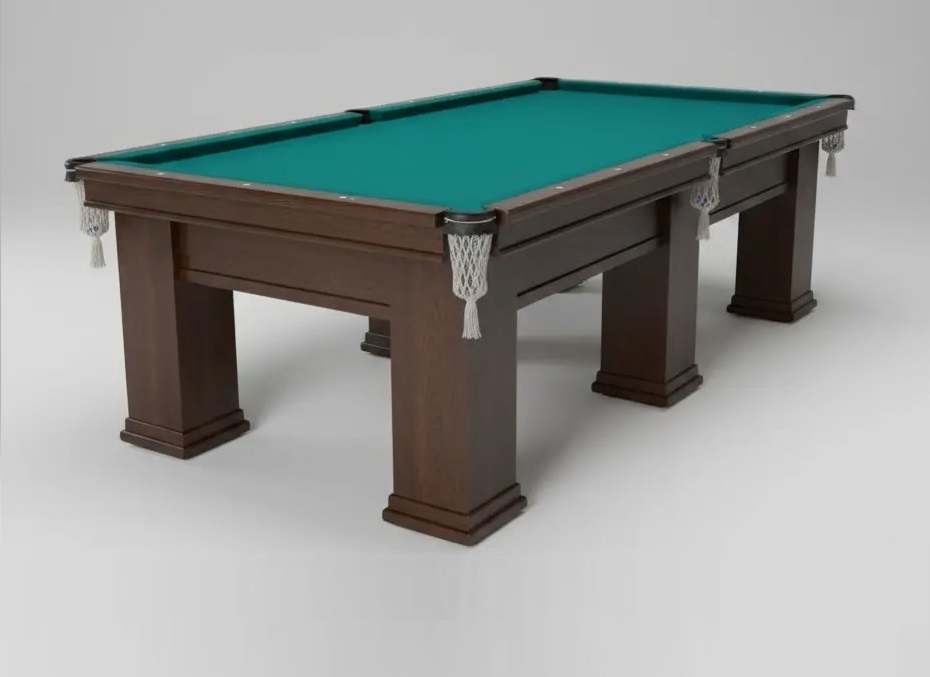
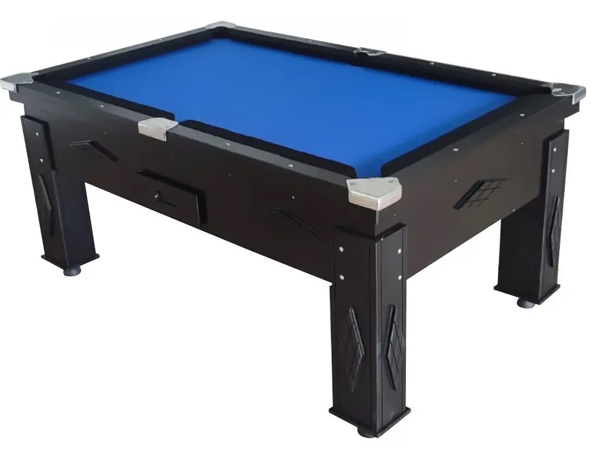
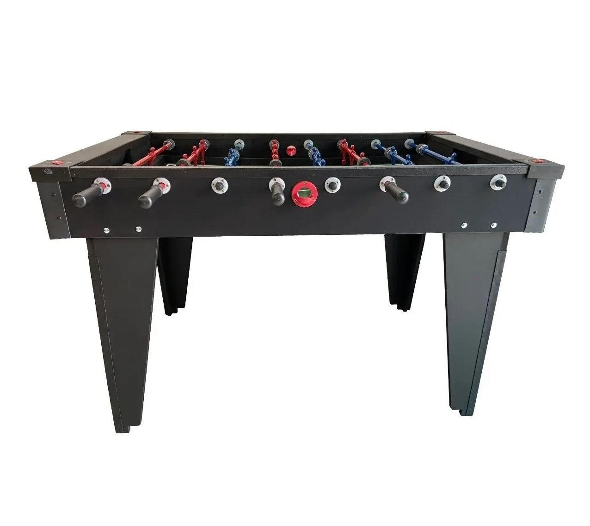
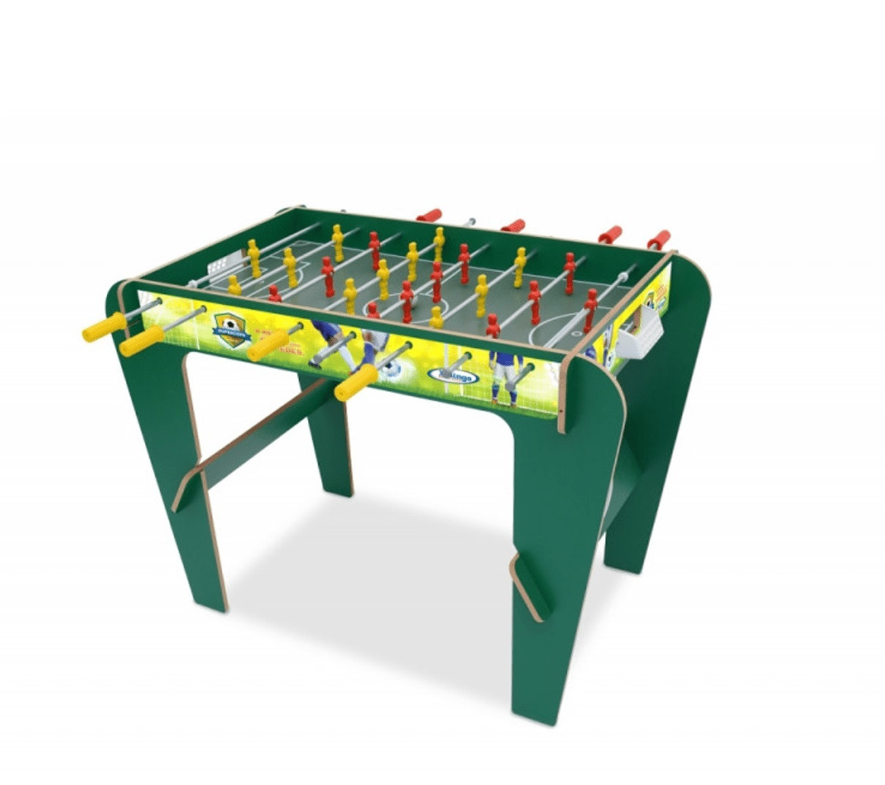

Mesa de Sinuca profissional

Mesa com medidas oficiais, pedra ardósia polida e caçapas de couro legítimo.
Sua referência em mesas de sinuca, totó e Pebolim
Confira nossos modelos de alta qualidade para bares, eventos ou para sua casa.

Mesa com medidas oficiais, pedra ardósia polida e caçapas de couro legítimo.

Ideal para espaços reduzidos e salas de jogos em apartamentos ou casas.
Mesas robustas e divertidas para garantir a disputa perfeita no futebol de mesa.

Estrutura resistente com bonecos de alumínio fundido, perfeita para alta frequencia de uso.

Diversão segura para crianças com cantos arredondados e pés antiderrapantes.